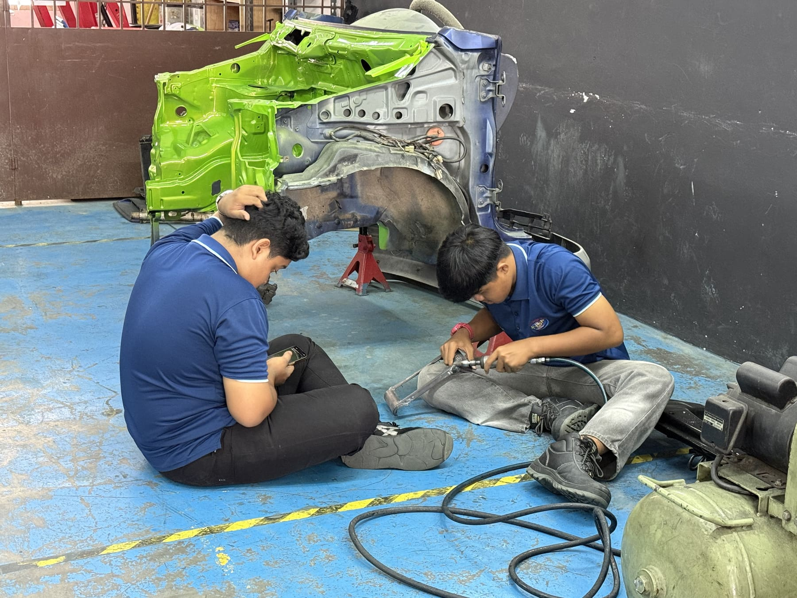
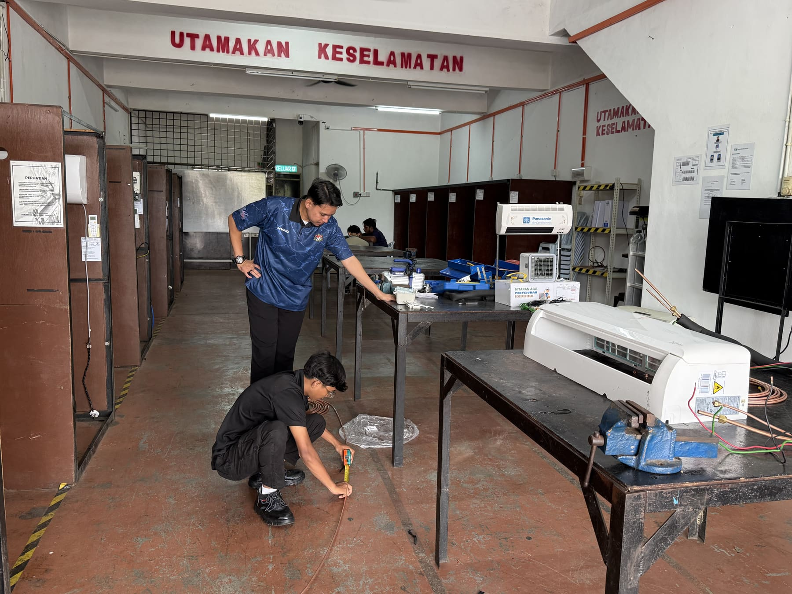

Tiga program kemahiran teknikal bertauliah Sijil Kemahiran Malaysia (SKM).

SKM Tahap 2 & 3Program ini melatih pelajar dalam kemahiran diagnosis, penyelenggaraan dan pembaikan kenderaan bermotor — merangkumi sistem enjin, brek, suspensi, elektrik kenderaan dan sistem penghantaran kuasa.

SKM Tahap 3Program ini melatih pelajar dalam pemasangan, penyelenggaraan dan pembaikan sistem penyaman udara domestik dan komersial, termasuk sistem penyejukan (refrigeration) asas.
 SKM Tahap 2 & 3
SKM Tahap 2 & 3
Program ini melatih pelajar dalam pendawaian, pemasangan dan penyelenggaraan sistem elektrik bangunan mengikut piawaian keselamatan yang ditetapkan.
Semak keperluan permohonan dan pilihan bantuan kewangan yang tersedia untuk anda.